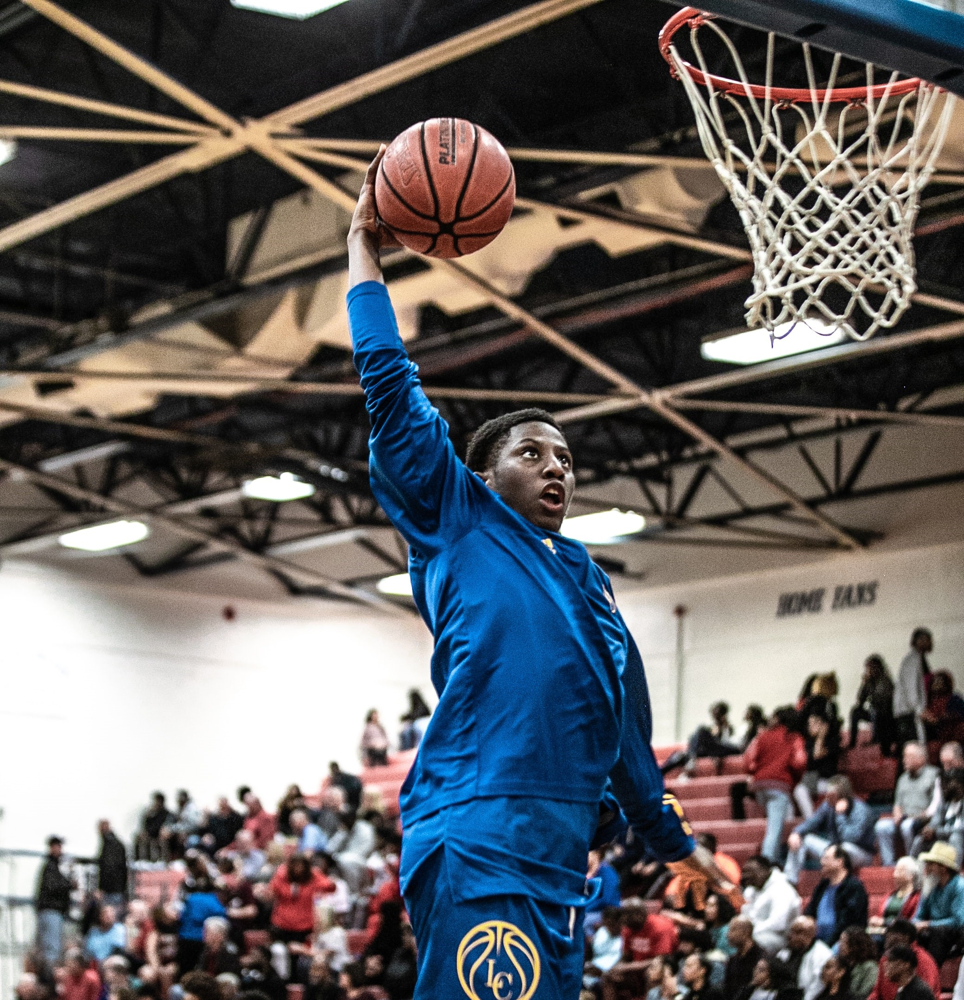

A new building - really an extension of an old drama club workshop - was unveilled after weeks of fixes and additions. This venue is to serve as a place for organizing all school activities. It serves as a second boardroom from which major decisions on educational as well as extra-curricular activities will be made. It was an internal event but parents and other education officials will be invited to a follow up event. The day to that event will be communicated soon.

In June 2019, the Mercer University School of Engineering offered a five-day robotics workshop for high-school
teachers of STEM subjects. The objective of the workshop was to show teachers how robotics can be used to teach
STEM subjects. For example, students can learn applied physics concepts, such as mechanical advantage in design
of gears; speed and friction, by observing a robot’s movement in response to motor actuation; and electronics
sensors through sensor integration, calibration, and measurements. Without formal training in structured
programming, students can also learn to program using visual module programming.Eight high school teachers attended the
workshop. The teachers were drawn from middle schools in 3 counties – Nakuru, UasinGishu, and
Nairobi. Three teachers, including one gifted-education teacher came from a school in Nairobi County, two teachers
came from a school in Nakuru County, and three teachers, including a gifted education teacher, came from a
school in UasinGishu County. The teachers were divided into groups of two. Three groups had teachers from the same
school, and the fourth group had the gifted education teachers.

To sum up what was a long season of highs and lows, we beat Shiners Highs School in 2nd place play-offs and seized 2nd place. We got funding as a result which we utilized for improving our existent basketball courts for training.
During the season, we trumped all the schools in the qualifies losing to only Kabarak High, but we still beat them in the quarter finals. Some of our players were spotted by regional scouts and they'll be joining various academies on school completion. We will be allowing them time to train outside school premises with proffessionals to grow their talent. We will be publising the list soon.

Seniors Year's examination. It was for preparation for our national examinations. We contracted professional examiners to man it to give a feel of the real exams.
We try to simulate such an environment to be part of their daily lives since life itself is also an exam!.

Junior Year's examination. Opening exams to get them to the feel of our institution. This was for the purpose of invoking a working mentality after a long break at home.
They performed well to our surprise!.
Our Activities Snapshot Selection
If you have any good snapshot of our activities, please contact IT through: it@gabischool.ac.ke.